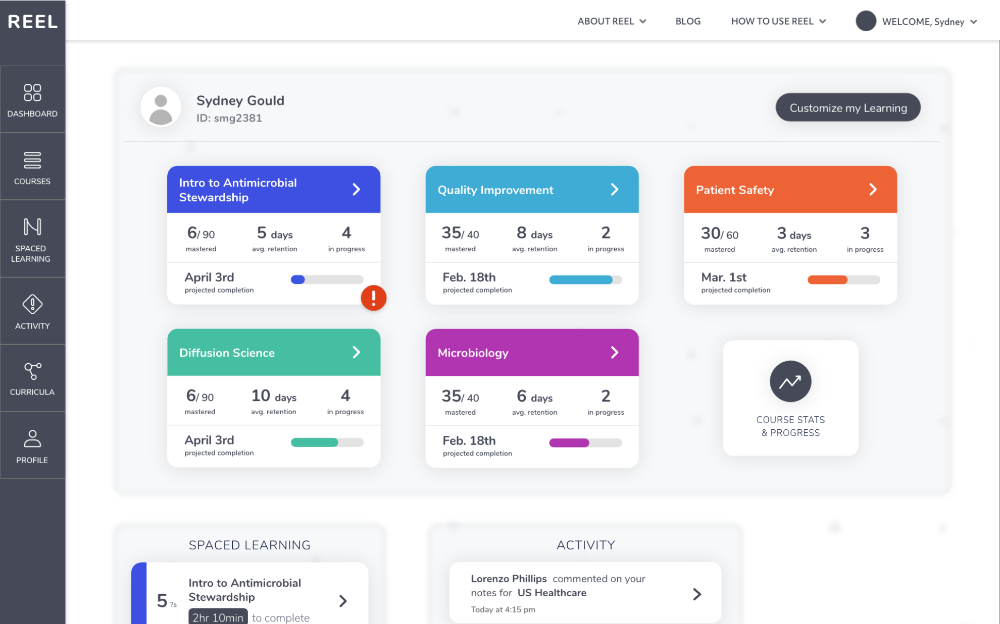
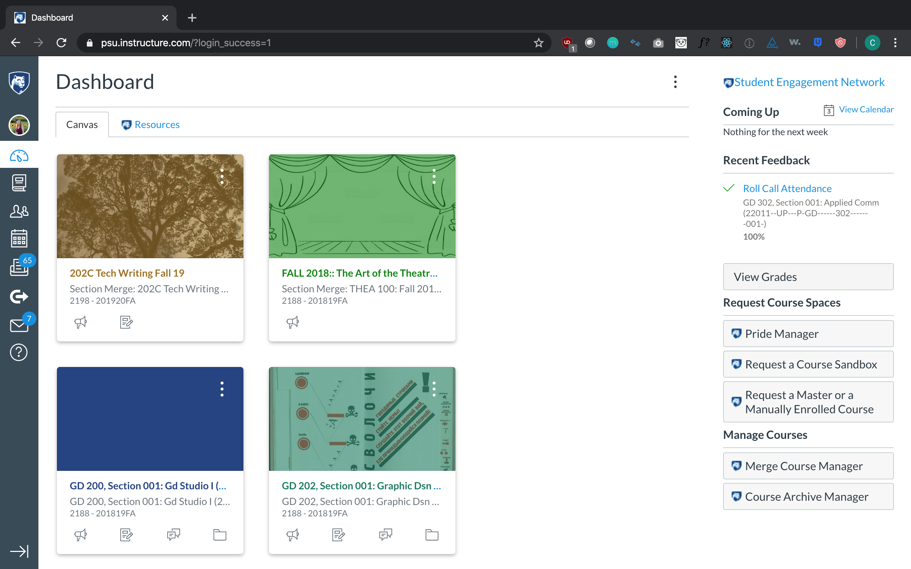
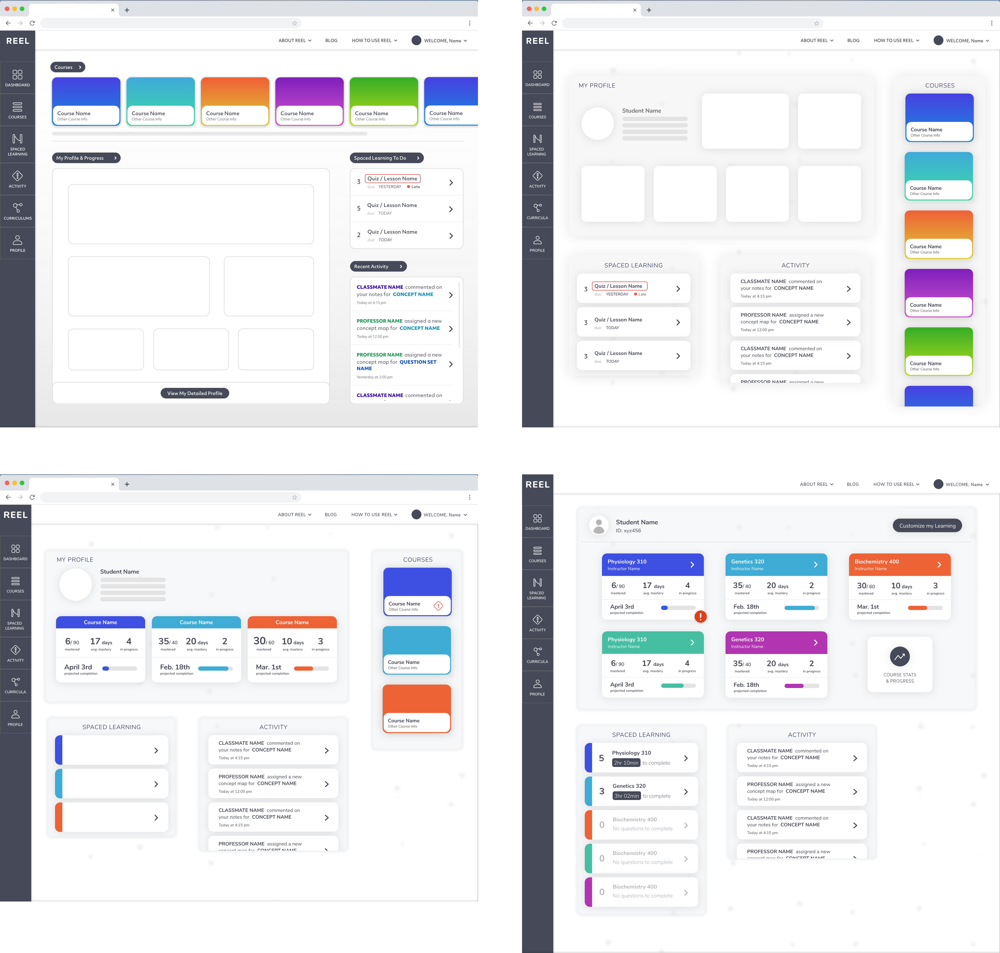
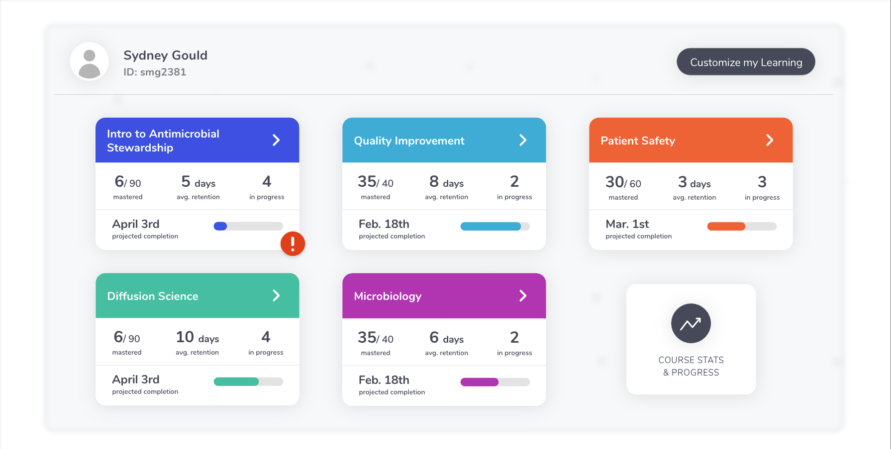
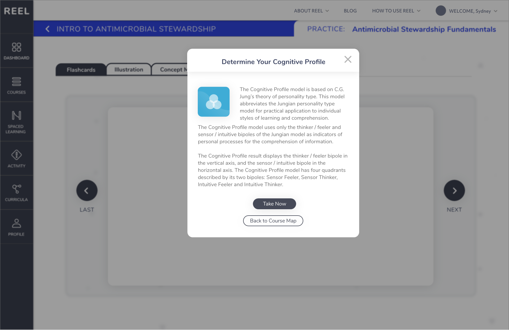
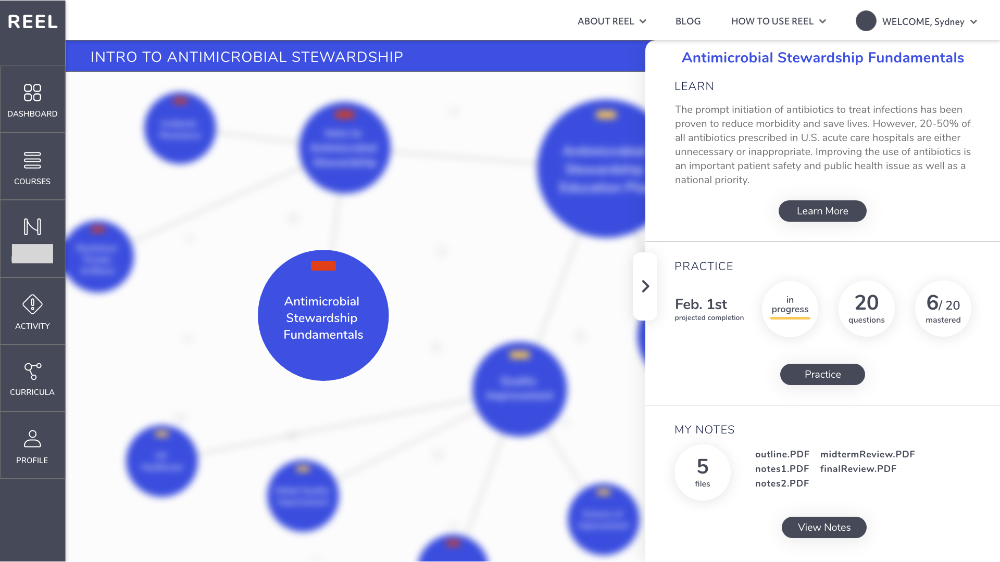
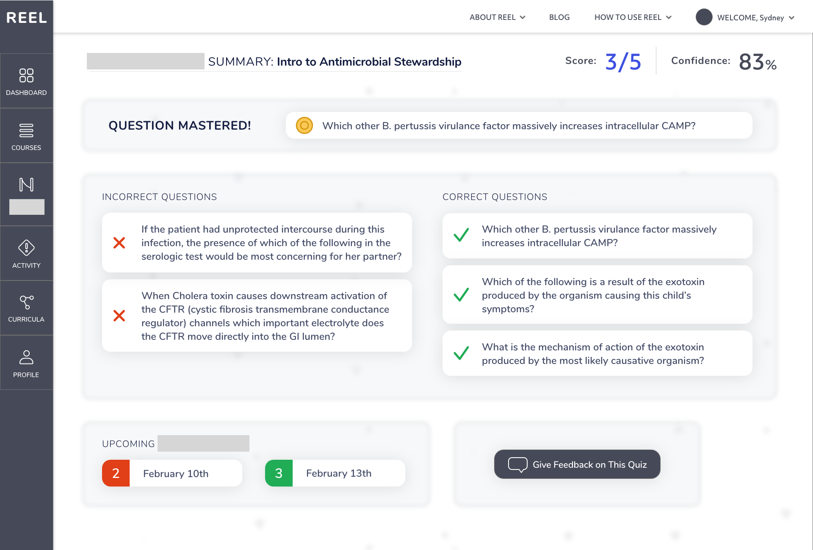

REEL - West Arete Internship
A learning management system (LMS) designed to help students learn better based on their personal learning style and the research behind how to learn best.
UI/Visual
UX
Adobe XD
XD Prototyping
Client Work

Context:
3 week long project
Client: Professors well-versed in education research
Individual UI design
UX Design/Ideation sessions with product owner & clients
Team
Christie (me):
UI/UX Designer
Natalie:
Product Owner
Chet:
Project Manager
PROBLEM STATEMENT
Most current LMS’s do not capitalize on their position in students' educations, serving as file storage systems that fail to enforce positive or personalized learning habits.
Students don’t know how to learn.
Many students are unaware of the best way to learn based on their individual traits. This often leads to favoring of memorization over comprehension.
LMS’s miss opportunities.
College students rely heavily on LMS's for class resources, but these applications could also be used to reinforce positive learning habits.
No clear progression
It is difficult for self-directed learners to know how much they have learned on the topic they are learning, and how much they have left to go.


Typical LMS's fail tp provide students with unique learning opportunities and serve more as file storage for professors.
Users
Lost Learner
This student does not have a good idea of how to best learn and retain information in their courses, and as a result, usually crams before tests, and cannot remember that info long after. They don't have much of a desire to know all the research and details behind how they should learn, but would like to get better.
Needs
Pro Learner
This student is generally quite good at learning, and would like to monitor their progression and abilities throughout a course. They would be interested in reading about the research behind their learning style, so they can improve on their own. This student would also like to have the ability to try out different tpyes of learning tools.
Needs
Goals
Personalize Learning
Automate quiz generation to create a solution that doesn't take lots of time from teachers.
Answer “How Am I Doing?”
Provide teachers with a list of students who complete the reading, incentivizing students without extra credit.
Incorporate Research
Show teachers specific content students are struggling with so they can steer their lectures towards these areas.
process & progression

Defining the Product
Working alongside Natalie and our clients to create a scope and definition for this application was a major part of the project. Our clients came in with lots of concrete research and a broad goal of what the application could be, so we worked to hone in on the most feasible and impactful experience that best reflected their mission.

A Different LMS
I often heard the feedback that the UI should look different from a traditional LMS. Executing this was a practice in knowing when to use familiar, established design patterns, and when we should stray from those (and more importantly why). The evolution of hifi's demonstrates the progression from traditional LMS to a strategically unique design.
Features
Dash Courses
Basic stats that inform the student about their learning without overwhelming them with complex data.
These stats provide a simple, personalized interface for the Lost Learner
while giving the Pro Learner an overview of learning progression.
The Pro Learner can also click "Course Stats & Progress" to learn about the details.


Learning Skillsets
Students are prompted to complete learning skillsets that provide them with the tools to learn better. This will guide the Lost Learner to become a better learner and the Pro Learner can explore other skillsets to gain new learning tools.
Course Concept Map
A visualization of students' curricula, allowing for freedom in exploration of topics. REEL allows for more self-directed learning aimed to make learning more enjoyable for the Lost Learner and give the Pro Learner more learning independence.

